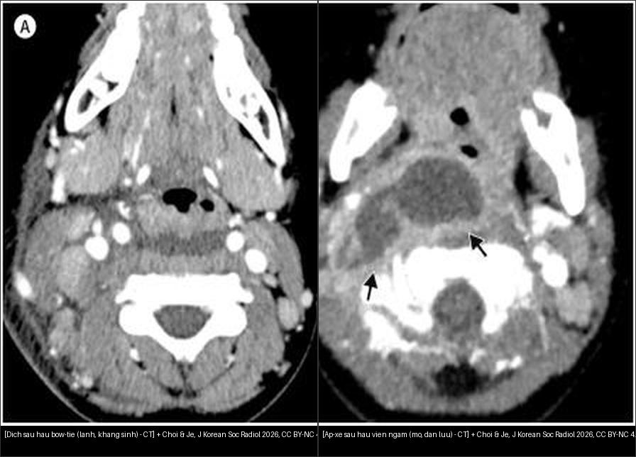
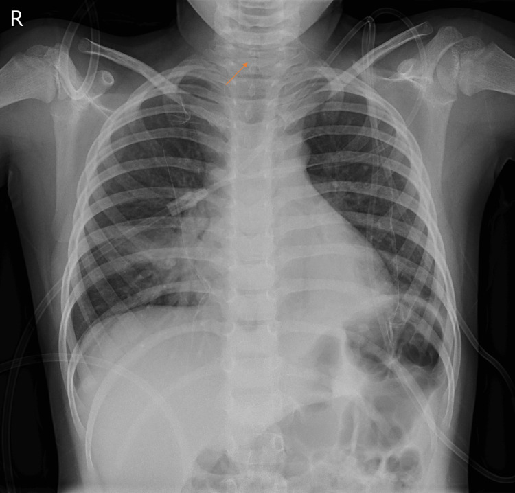
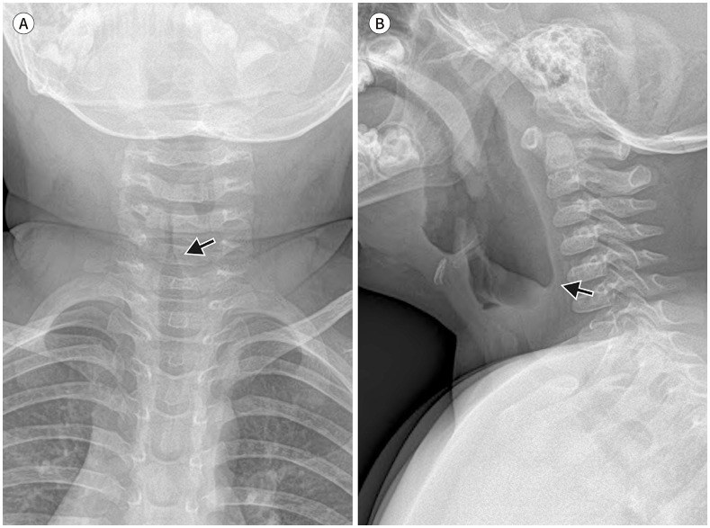
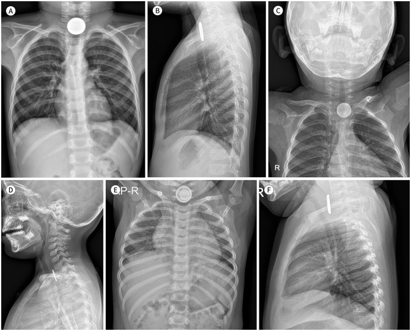

612 — Cấp cứu đường thở trên trẻ em: Croup vs viêm nắp thanh quản, áp-xe sau hầu & dị vật / Pediatric stridor
Tags: pattern:duong-tho-tre-em vung:duong-tho-nhi protocol:X-quang-co-nghieng
Mức chắc chắn (certainty): tổng hợp y văn (literature synthesis) — nhóm tự biên từ 2 nguồn mở (Cureus 2024 CC BY 4.0 + J Korean Soc Radiol 2026 CC BY-NC 4.0), chưa gắn ca nguyên văn đơn lẻ.
1. Tổng quan — hạ thanh môn là chỗ hẹp nhất + 3 câu hỏi mọi khò khè
- Hạ thanh môn (subglottis) là chỗ hẹp nhất đường thở trẻ em (người lớn là thanh môn) — TẠI SAO 1 mm phù đã nguy kịch: sức cản dòng khí tỉ lệ nghịch lũy thừa 4 bán kính (Poiseuille), phù nề vòng sụn nhẫn (không giãn được) bóp bán kính rất nhanh.
- 3 câu hỏi mọi trẻ khò khè (stridor): (1) tuổi mấy? (2) sốt + nhiễm độc không? (3) đáp ứng epi/steroid không? — 3 câu này chia 90% ca trước cả phim.
- Tuổi chốt theo Choi & Je 2026: croup 6 tháng–3 tuổi (virus á cúm — parainfluenza), viêm khí quản vi khuẩn 3–8 tuổi (tụ cầu vàng — S. aureus, hậu virus), viêm nắp thanh quản nay gặp thanh thiếu niên/người lớn (Hib đã giảm nhờ vaccine).
- Ngưỡng xử trí: dexamethasone 0,6 mg/kg + epi khí dung đáp ứng tốt = croup; không đáp ứng + sốt cao + nhiễm độc = viêm khí quản vi khuẩn (đặt nội khí quản tới 80% ca, tử vong ~20% — Moreira 2024).
2. Gamut khò khè + sốt theo tuổi (Gamut)
- 6 tháng–3 tuổi + ho ông ổng (barking) + hạ sốt + đáp ứng epi: croup — dexa + epi + về (nặng mới nhập).
- 3–8 tuổi + sốt cao + nhiễm độc + KHÔNG đáp ứng epi/steroid: viêm khí quản vi khuẩn — kháng sinh + nội khí quản sớm (màng giả bong gây tắc đột ngột!).
- Sốt cao + chảy dãi + không nằm được + giọng khoai nóng: viêm nắp thanh quản — CẤM đè lưỡi, nội khí quản phòng mổ (ngón cái — thumb sign chỉ chụp khi ổn định).
- < 5 tuổi + sốt + cổ cứng/nghiêng + nuốt đau: áp-xe sau hầu (hạch sau hầu teo sau 5 tuổi) — CT cản quang phân dịch vs mủ.
- 1–3 tuổi + sặc đậu phộng + khò khè 1 bên: dị vật đường thở (van 1 chiều → bẫy khí) — phim thở ra/nằm nghiêng + soi phế quản.
- Nuốt đồng xu/pin + nuốt đau + chảy dãi: dị vật thực quản — pin nút là tối khẩn tính bằng giờ (hoại tử trong < 2 giờ!).
3. Bảng so sánh phân biệt (ma trận đối chiếu)
| Thực thể (entity) | Hình ảnh điển hình | Chốt vào (rule-in) | Chốt loại (rule-out) | Gợi ý xác nhận |
|---|---|---|---|---|
| Croup | Hẹp hạ thanh môn đối xứng (steeple) trên AP + giãn hạ họng trên lateral | 6th–3 tuổi + ho ông ổng + đáp ứng epi | Nắp dày → viêm nắp; không đáp ứng → BT | X-quang cổ AP + nghiêng |
| Viêm khí quản vi khuẩn | Steeple + thành khí quản không đều + màng giả + viêm phổi kèm | Sốt cao + nhiễm độc + KHÔNG đáp ứng steroid/epi | Đáp ứng epi tốt → croup | Cấy dịch PQ + NKQ sớm |
| Viêm nắp thanh quản | Nắp dày hình ngón cái (thumb) + nếp phễu dày, hạ thanh môn bình thường | Chảy dãi + không nằm + giọng khoai nóng | Steeple đối xứng → croup | NKQ phòng mổ, cấm đè lưỡi |
| Dịch sau hầu (lành) | Dẹt, thắt nơ (bow-tie) 2 đầu nhọn, KHÔNG viền ngấm | < 5 tuổi + dẹt + không viền | Lồi + viền dày → áp-xe | Kháng sinh + theo dõi |
| Áp-xe sau hầu | Ổ dịch lồi + viền ngấm dày + qua đường giữa + đè đường thở | Viền dày + sốt cao + cổ cứng | Dẹt bow-tie → dịch | Dẫn lưu + cấy (nối bài 730) |
| Dị vật đường thở | Bẫy khí 1 bên thì thở ra/nằm nghiêng (đậu phộng thấu quang!) | Sặc + khò khè 1 bên + bẫy khí | 2 bên đều → hen/croup | Soi phế quản gắp |
| Xu vs pin nút | Xu: đặc đều; pin: quầng đôi (double-halo) AP + gờ vát lateral | Double-halo/gờ vát = pin → tối khẩn | Tròn đều + sau khí quản → xu thực quản | Nội soi gắp (pin < 2 giờ!) |

Trái: dịch (effusion) thắt nơ 2 đầu nhọn, không viền. Phải: áp-xe viền ngấm dày + đè hẹp đường thở. Nguồn: Choi & Je, J Korean Soc Radiol 2026 Fig. 8, CC BY-NC 4.0. Ảnh ghép letterbox.Quiz composite: che 2 nhãn, hỏi bên nào mổ?
Bấm để hiện đáp án
- Trái = dịch sau hầu (effusion) — dẹt, bow-tie, không viền → kháng sinh + theo dõi, đừng mổ oan.
- Phải = áp-xe sau hầu — lồi + viền ngấm dày + đè đường thở → dẫn lưu + giữ đường thở.
Steeple không đồng nghĩa croup — ca viêm khí quản vi khuẩn cũng steeple!
- Ca Moreira (bé trai 5 tuổi): AP hẹp hạ thanh môn steeple điển hình nhưng nhiễm độc + không đáp ứng steroid/epi + toan hô hấp pH 7,19 → cấy ra liên cầu nhóm A, phải đặt NKQ + kháng sinh 10 ngày.
- Bài học: steeple chỉ nói "hẹp hạ thanh môn", đáp ứng thuốc mới phân biệt croup vs vi khuẩn — đừng thấy steeple là kết luận croup rồi cho về.
4. Protocol chụp cổ nhi
- X-quang cổ AP + nghiêng (trẻ ổn định, ngồi thẳng, cổ duỗi, thì hít vào): AP tìm steeple, nghiêng tìm thumb + đo mô mềm trước sống (> 7 mm ở C1–C4 hoặc > 14 mm ở C5–C7 là dày — loại trừ cổ gập/khóc).
- Viêm nắp thanh quản nghi ngờ: CẤM đè lưỡi/soi họng tại giường — NKQ tại phòng mổ có sẵn mở khí quản; phim chỉ khi trẻ ổn và không trì hoãn đường thở.
- Sau hầu: CT cản quang khi sốt cao + cổ cứng (phân dịch vs mủ) — mủ lan danger space xuống trung thất thì nối bài 730.
- Dị vật: cặp phim hít vào–thở ra (trẻ lớn) hoặc nằm nghiêng 2 bên (trẻ nhỏ: bên nghiêng = thì thở ra); pin nút thực quản = nội soi tối khẩn, không chờ.
flowchart TD
A[Trẻ khò khè] --> B{Chảy dãi + không nằm?}
B -->|Có| C[Viêm nắp: CẤM đè lưỡi, NKQ phòng mổ]
B -->|Không| D{Đáp ứng epi/steroid?}
D -->|Tốt, 6th-3 tuổi| E[Croup: dexa + về theo dõi]
D -->|Không + sốt cao| F[Viêm khí quản VK: KS + NKQ sớm]
A --> G{Sặc + 1 bên?}
G -->|Có| H[Dị vật: thở ra/nghiêng + soi PQ]
G -->|Nuốt pin| I[Double-halo: nội soi < 2 giờ]
5. Biến thể bình thường và cạm bẫy
- Khóc/thở ra giả steeple — hạ thanh môn hẹp sinh lý khi khóc + dây thanh khép: chụp lại thì hít vào yên tĩnh mới kết luận.
- Cổ gập giả dày mô mềm sau hầu — duỗi cổ + hít vào mới đo 7 mm/14 mm; khóc cũng đẩy họng phồng giả áp-xe.
- Xu tưởng pin (và ngược lại): pin có quầng đôi + gờ vát — đọc AP không đủ, bắt buộc lateral; pin = giờ, xu = ngày (xu trơn < 24 giờ có thể chờ qua tự nhiên nếu không triệu chứng — theo dõi, không áp dụng cho pin!).
- Đậu phộng thấu quang — X-quang thường quy hít vào có thể bình thường hoàn toàn: sặc + khò khè 1 bên là soi, đừng chờ phim "đẹp".
- Thỏa mãn tìm kiếm: viêm khí quản vi khuẩn thường kèm viêm phổi — thấy phổi mờ đừng dừng, vẫn phải đánh giá đường thở.
6. Tự lượng giá — Blind Quiz
Ca 1 — Bé trai 5 tuổi, ho + khò khè + khó thở tăng dần trong 2 giờ, đáp ứng kém với steroid/epi khí dung. Nhìn AP cổ, mô tả trước.

- Hỏi: hẹp ở đâu, hình gì? 3 phân biệt + dấu hiệu nào phân định croup vs vi khuẩn?
Bấm để hiện đáp án (findings + chẩn đoán)
- Dấu hiệu (findings): hẹp hạ thanh môn đối xứng hình tháp chuông (steeple, mũi tên) — nhưng trẻ nhiễm độc + không đáp ứng epi + toan hô hấp.
- Chẩn đoán (diagnosis): viêm khí quản vi khuẩn (liên cầu nhóm A) — vì steeple chỉ nói vị trí hẹp, còn đáp ứng thuốc mới là chốt (croup phải đáp ứng epi).
- Nguồn ảnh: Moreira et al., Cureus 2024 Fig. 1, CC BY 4.0.
Ca 2 — Bé gái 2 tuổi, ho ông ổng + khò khè hít vào, không sốt cao. Cặp AP + nghiêng:

Bấm để hiện đáp án (findings + chẩn đoán)
- Dấu hiệu (findings): (A) hẹp hạ thanh môn đối xứng steeple (mũi tên) + (B) ứ khí giãn hạ họng trên phim nghiêng.
- Chẩn đoán (diagnosis): croup điển hình (viêm thanh khí phế quản virus) — tuổi + ho ông ổng + cặp dấu AP/nghiêng đủ bộ; dexa + epi + theo dõi.
- Nguồn ảnh: Choi & Je, J Korean Soc Radiol 2026 Fig. 7, CC BY-NC 4.0.
Ca 3 — 3 trẻ nuốt dị vật ở lỗ vào ngực. Cặp nào phải nội soi TỐI KHẨN?

Bấm để hiện đáp án (findings + chẩn đoán)
- Dấu hiệu (findings): E quầng đôi (double-halo) trên AP + F gờ vát (step-off) trên lateral = pin nút; A–D đặc đều không quầng = xu thường (B/D sau khí quản = thực quản).
- Chẩn đoán (diagnosis): E/F pin nút thực quản — nội soi tối khẩn (< 2 giờ đã bỏng hoại tử!); xu trơn không triệu chứng có thể theo dõi ngắn.
- Nguồn ảnh: Choi & Je, J Korean Soc Radiol 2026 Fig. 10, CC BY-NC 4.0.
Bài liên quan chéo
- 600 – Tổng quan Nhi khoa
- 610 – Suy hô hấp sơ sinh (khò khè sơ sinh)
- 620 – Cấp cứu tiêu hóa nhi (xu qua đường tiêu hóa)
- 730 – Cổ sâu: áp-xe sau hầu & danger space (mủ lan trung thất)
Ảnh
612_steeple_XR_PMC-Moreira-CCBY40.jpg— CC BY 4.0, Moreira et al., Cureus 2024.612_croup-steeple-hypopharynx_XR_PMC-Choi-CCBYNC40.jpg,612_dich-vs-apxe-sau-hau_CT_PMC-Choi-CCBYNC40.jpg,612_xu-vs-pin-nut_XR_PMC-Choi-CCBYNC40.jpg— CC BY-NC 4.0, Choi & Je, J Korean Soc Radiol 2026 (dùng phi thương mại, ghi nguồn).- Chi tiết giấy phép từng ảnh trong
images/CREDITS.md.
Không dùng để chẩn đoán độc lập khi chưa có người hướng dẫn.